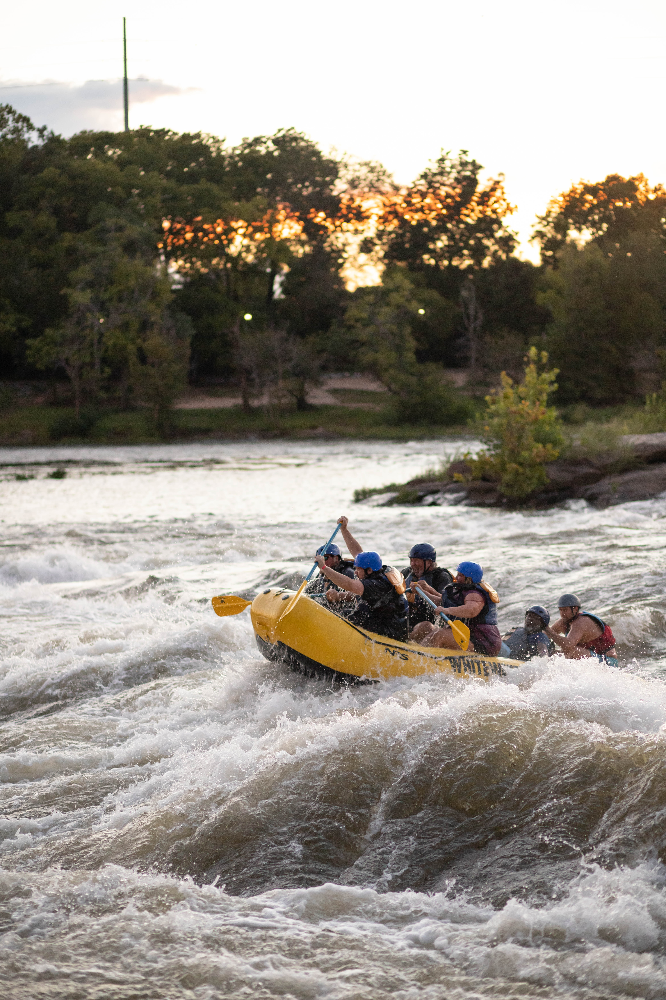
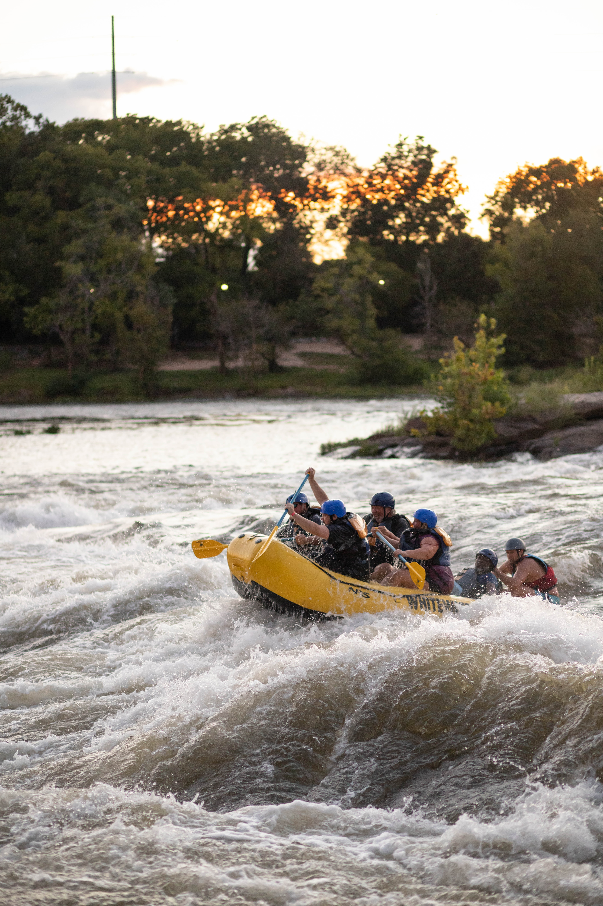

Our mission is to provide thrill-seekers with unforgettable adventures on the wild waters. We aim to create an exhilarating and safe environment for individuals of all skill levels, where they can experience the rush of rafting while connecting with nature. Join us as we embark on a journey of adrenaline, camaraderie, and the sheer joy of conquering the rapids.

West Mountain Rafting
History
Our water rafting company was founded in 1995 by a group of passionate outdoor enthusiasts who shared a deep love for adventure and nature. The founders, experienced rafting guides themselves, recognized the immense potential of offering thrilling rafting experiences to individuals seeking an adrenaline rush and a connection with the great outdoors.
In the early years, our company started small, operating on a local river with a single raft and a small team of dedicated guides. The focus was on providing high-quality, safe, and exhilarating rafting trips that catered to both beginners and experienced rafters. Word quickly spread about the exceptional experiences offered by our company, leading to a growing demand for our services.
As our reputation grew, we expanded our operations and ventured into new rivers and territories, offering a wider range of rafting trips to accommodate diverse preferences and skill levels. We invested in top-of-the-line equipment and continuously trained our guides to ensure the highest standards of safety and professionalism.
Throughout the years, we have remained committed to environmental stewardship, promoting responsible rafting practices, and raising awareness about the importance of preserving the natural habitats we operate in. We have actively participated in river conservation initiatives, collaborated with local communities, and educated our guests about the fragile ecosystems that surround us.
With each passing year, our company has grown stronger, gaining recognition as a leader in the water rafting industry. We have welcomed countless adventurers from around the world, creating unforgettable memories and forging lifelong connections with nature. Our commitment to excellence, customer satisfaction, and the pursuit of thrilling experiences remains at the core of our company's ethos.
Adventure Awaits You!
 
